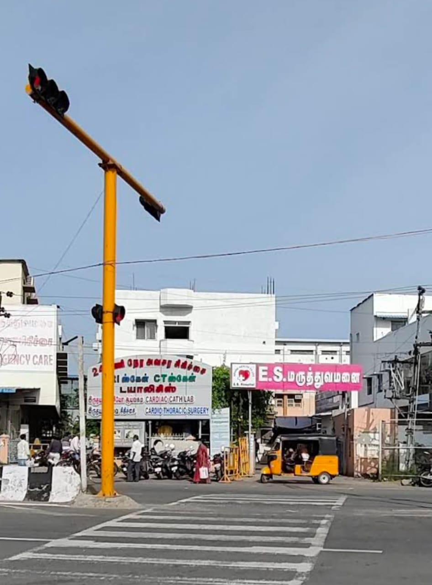

ES Hospital in Villupuram is a multi-specialty healthcare facility offering comprehensive medical services across various disciplines, including cardiology, neurology, orthopedics, and gynecology. Established in 2007, it is equipped with modern infrastructure and provides 24/7 emergency care. The hospital is located at No. 32-B, Trichy Trunk Road, Villupuram, Tamil Nadu 605602